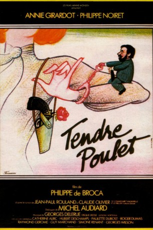

#5690 Ein Verrücktes Huhn
Alternativ: Dear Inspector (Englischer Titel)
 
 IMDB-Wertung: 6.8 / 10
IMDB-Wertung: 6.8 / 10  Metascore: 0
Metascore: 0 
Lise Tanquerelle ist eine unscheinbare Kriminalkommissarin, die eines Morgens mit dem verträumten Mopedfahrer Antoine Lemercier zusammenstößt. Dies ist der Auftakt zu einer Romanze zweier Leute, die sich aus Studienzeiten bereits kannten und sich dann aus den Augen verloren. Doch der Weg zum gemeinsamen Glück ist alles andere als ein einfacher, denn Antoine, mittlerweile ein Professor für das Altgriechische, ist ein kauziger Typ geworden und Lise geht voll in ihrer Arbeit auf. Ein neuer Fall erweist sich als äußerst mysteriös, denn mehrere Pariser Abgeordnete werden hinterrücks erstochen, immer mit der selben Mordwaffe. Die beiden sehen sich nur noch selten, bis die Vorgesetzten von Lise ihr den Fall wegen des ausbleibenden Ermittlungserfolges wegnehmen...
Jahr: 1977
Dauer: 105 Minuten
FSK: 16
Land: Frankreich Studio: Neue Constantin FilmTonspuren:
Untertitel: Deutsch,
Auflösung: 1080p (1808x1080) Größe: 6707 MB
Genre: Action, Thriller, Komödie
Regisseur: Philippe de Broca
Drehbuch: Matthew Swanson
Soundtrack:
Darsteller:
 Annie Girardot als Lise Tanquerelle
Annie Girardot als Lise Tanquerelle- Philippe Noiret als Antoine Lemercier
 Hubert Deschamps als Charmille
Hubert Deschamps als Charmille Paulette Dubost als Mère / Mother
Paulette Dubost als Mère / Mother Roger Dumas als Marcel Guérin, l'inspecteur
Roger Dumas als Marcel Guérin, l'inspecteur- Simone Renant als Suzanne
- Catherine Alric als Christine Vallier
- Raymond Gérôme als Le chef de la division criminelle / Director of Criminal Division
- Guy Marchand als Beretti
- Georges Wilson als Alexandre Mignonac
- Monique Tarbès als La dame des toilettes
- Henri Czarniak als L'inspecteur Cascard
- Maurice Illouz als L'inspecteur Picot
- Georges Riquier als Professeur Pelletier
- David Gabison als Le doyen Levergue
- Gabriel Jabbour als Le médecin Légiste
- Armelle Pourriche als La petite Catherine
- Michel Rocher als Le laborantin
 Jacques Boudet als L'homme élégant
Jacques Boudet als L'homme élégant- Anna Gaylor als La concierge d'Antoine
- Jacques Frantz als L'inspecteur Verdier
- Francis Lemaire als Antonio - Le coiffeur
- Jacqueline Doyen als Madame Melun
- Roger Muni als Le tailleur
- Sarah Sterling als Berthe
- Michel Audiard als Le mainate
- Gilbert Richard als Le speaker
- Bernard Spiegel als Un journaliste
- Colette Duval als La pharmacienne
- Jean-Pierre Rambal als Un garçon de café
- Guy Anthony als Monsieur de Grandville
- Guy Di Rigo als Maurice Rombard
- René Lefevre-Bel als Le ministre de l'intérieur , uncredited
- Michel Norman als Albert - un inspecteur , uncredited
Datei: X:\1977\Verrücktes Huhn, Ein (1977, FSK16, 1808x1080).mkv seit 10.03.2017
Festplatte: HD 1971-1979
 Es gibt insgesamt 33 Filme in der Gruppe '1977'
Es gibt insgesamt 33 Filme in der Gruppe '1977'